1. Reenoの紹介を読む

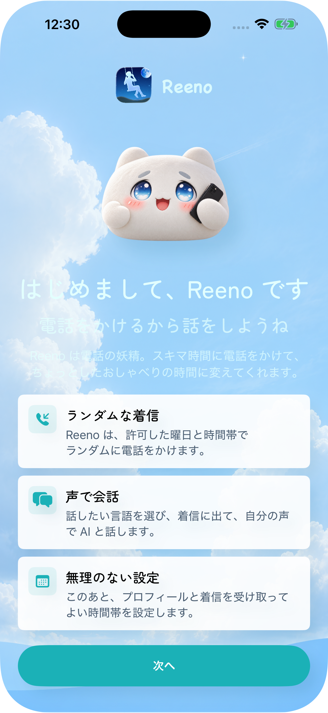
- 紹介を読み、下へスクロールして「次へ」を押します。
Reeno 利用ガイド
Reenoは、AIからふいに電話がかかってくるiPhoneアプリ。出られる時間を設定したら、電話の向こうのReenoと、好きな外国語でおしゃべりを。
App StoreでReenoを開く
名前・会話する言語などを登録し、AI利用への同意とマイク許可を済ませる。電話に出られる曜日と時間帯を選んだら準備完了。
設定した時間帯の中で、ランダムなタイミングに着信。アプリを開いて待ち続ける必要はない。
今日の出来事や好きなものなど、気軽な話題から。通話が終わったら、履歴で会話を振り返れる。
iOS 26以降のiPhoneに対応。最初の7日間は1日1回・最大2分の無料体験があり、その後の継続利用にはサブスクリプションが必要。利用条件・料金はアプリ内の最新表示を確認する。
画像の赤茶色の番号と、下の操作説明が対応しています。画像はタップで拡大できます。アプリ画面は日本語表示のサンプルで、夜の背景に統一しています。着信画面にはiPhoneの実際の表示例を掲載しています。実際の背景は時間帯や画面により異なります。登録済みの設定や通話状況により、表示される案内は変わります。
初回は次の順に進みます。入力途中から再開した場合や、すでに許可済みの場合は、一部の画面が省略されます。

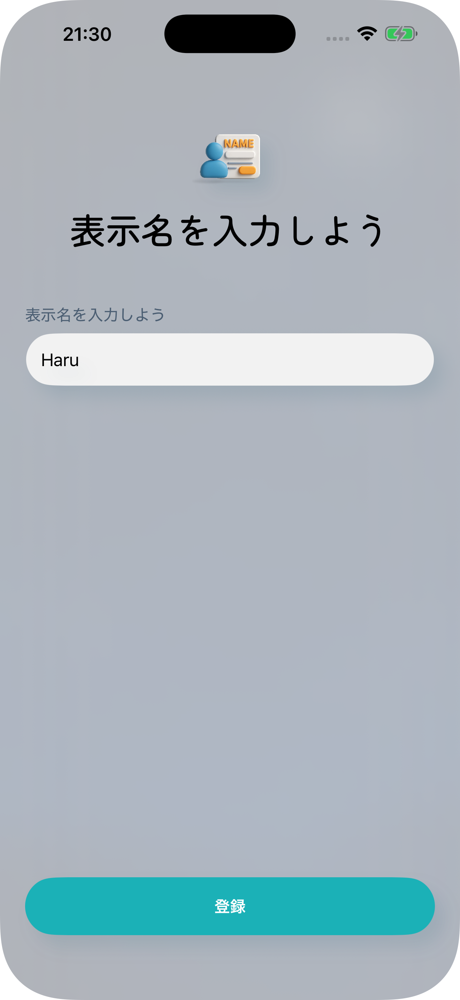
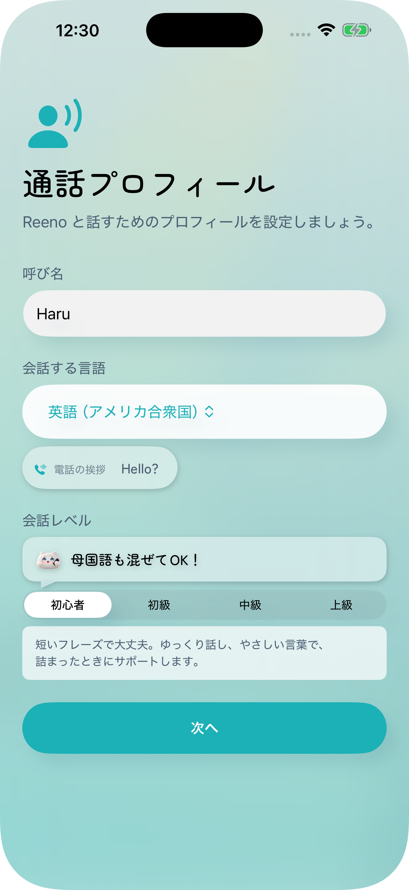
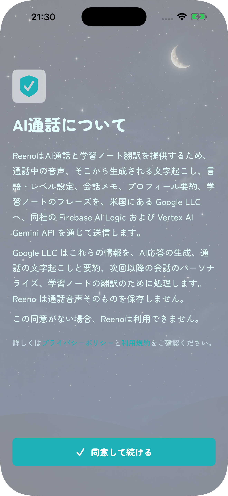
AI通話の利用には同意が必要です。Reenoは通話音声そのものを保存しません。
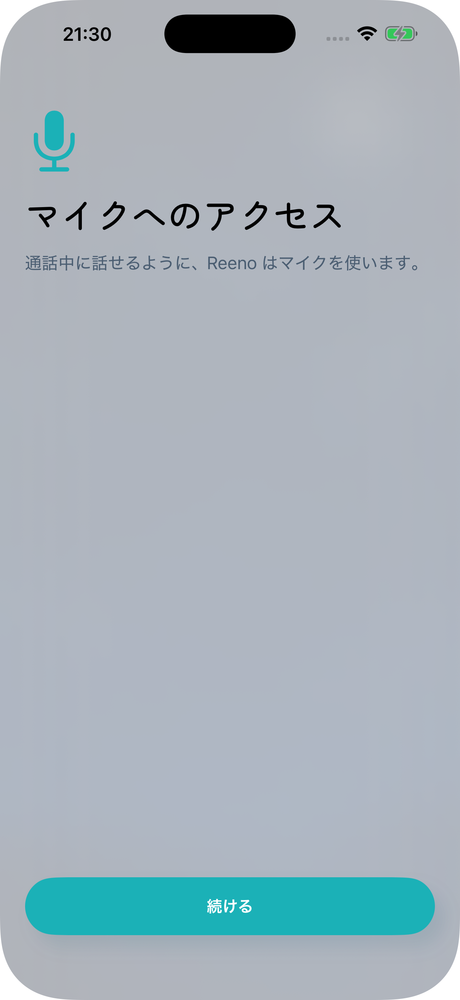
マイク許可は必須です。Reenoとの音声会話に使います。
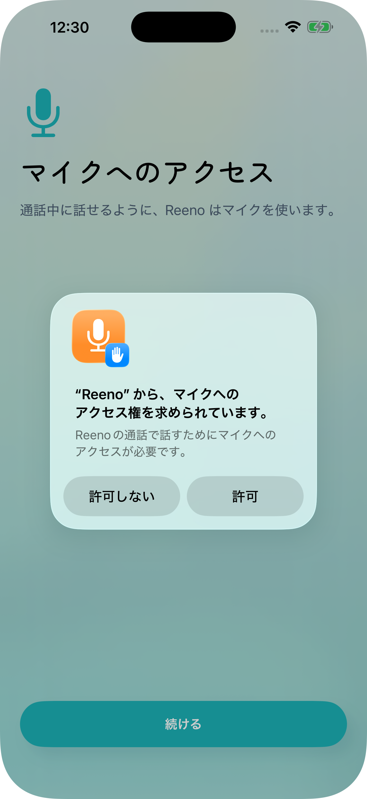
許可しなかった場合は、アプリに戻って「設定を開く」を押し、iPhoneの設定でReenoのマイクをオンにしてから戻ってください。すでに許可済みなら、この確認は表示されません。
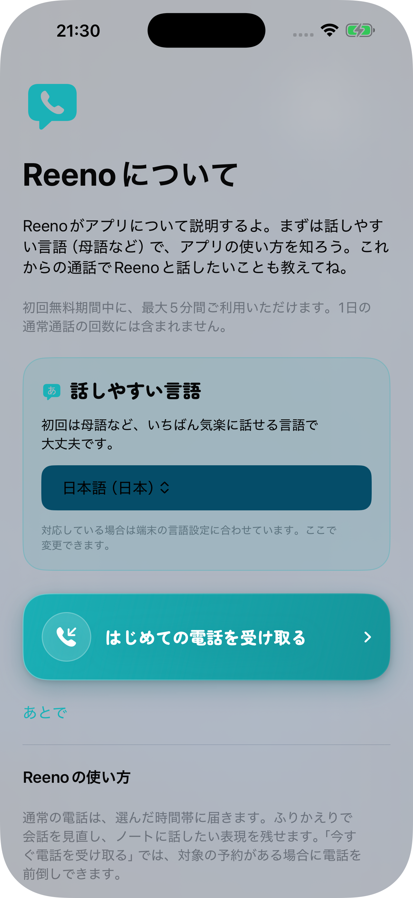
Reenoの使い方を聞ける、最大5分の案内通話です。初回無料期間中に利用でき、通常の1日の通話回数には含まれません。
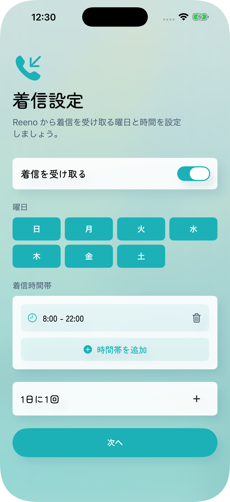
この設定が先にホームへ引き継がれる場合もあります。その場合は次の案内に沿って完了してください。
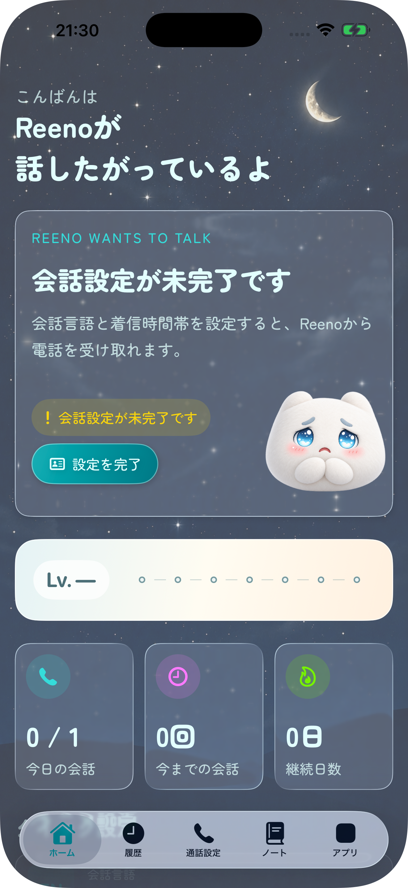
この例では会話設定が未完了で、「設定を完了」が表示されています。初回案内を後回しにした場合などは、着信の準備や時間設定の案内が表示されることがあります。案内がなければ準備完了です。
マイクの許可とAI利用への同意は必須です。通常の通知に関する案内が別途表示された場合は、その画面の説明に沿って設定してください。
まずはホーム下部の「通話設定」から、電話に出られる曜日・時間帯と会話プロフィールを確認しましょう。ホームを下にスクロールすると、言語などを変更するクイック設定もあります。
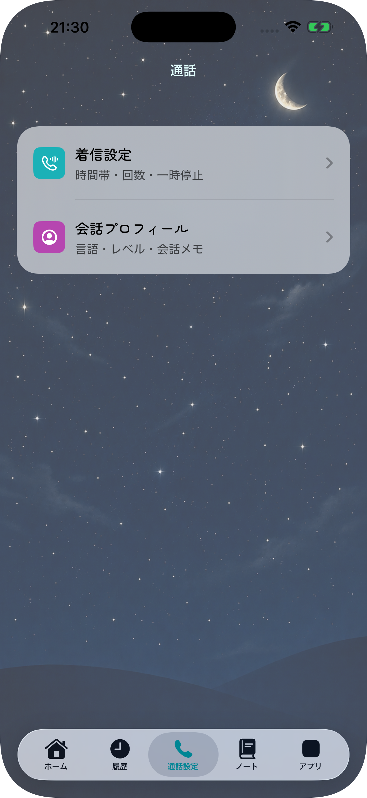
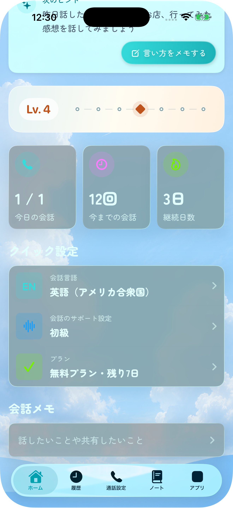
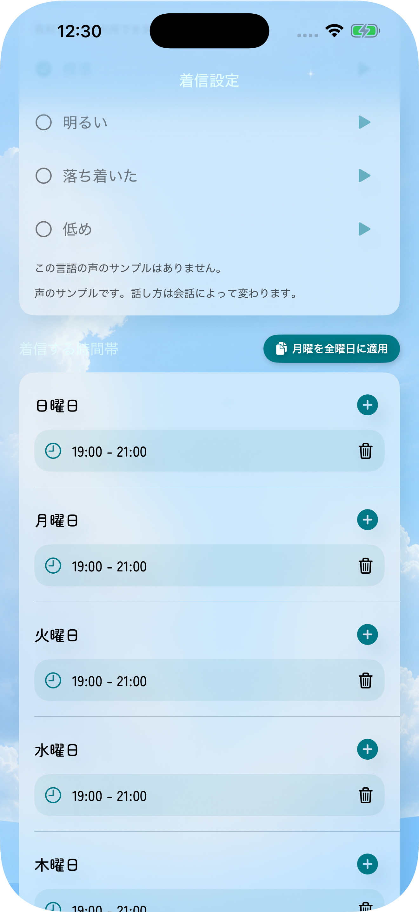
平日は19〜21時、休日は昼と夕方など、生活に合わせて設定できます。1日に複数の時間帯も登録できます。
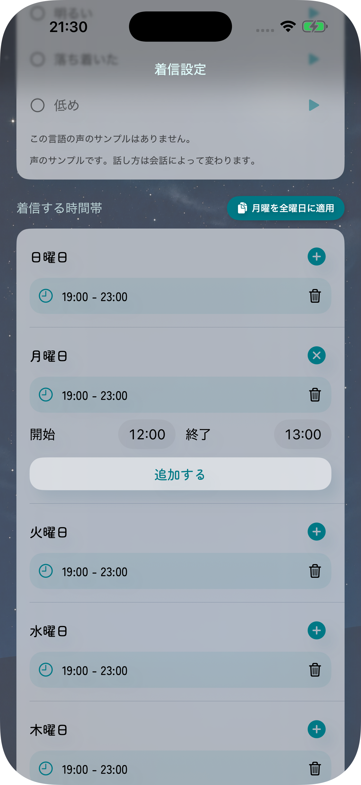
日付をまたぐ時間帯は分けて登録してください。例えば月曜22〜24時と火曜0〜1時、という形です。終了時刻の「0:00」はその日の「24:00」として扱います。
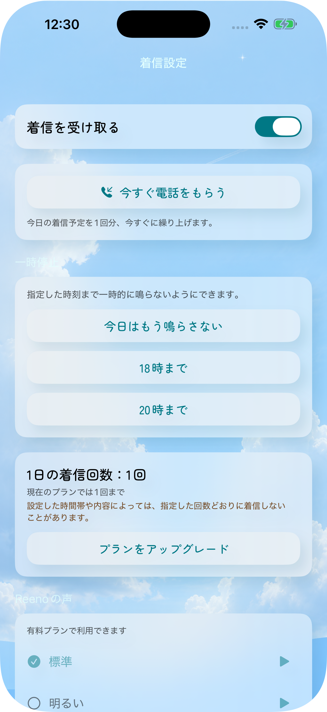
変更は自動保存されます。保存中・エラーの表示がある場合は、画面の案内を確認してください。
「今すぐ」は、いつでも即座に掛け直せる機能ではありません。
その日に残っている着信予定を1件、前倒しします。着信拒否・不在の直後など、前倒しできる予定がまだない場合は利用できません。着信オフ・一時停止中、通話中、1日の回数上限に達した場合なども対象外です。ボタンが表示されるときに利用してください。
通常の回数枠が追加されるわけではありません。この操作でリクエストした着信は、設定した時間帯の外でも届くことがあります。
設定した時間帯にReenoから電話が来ます。アプリを開いて待ち続ける必要はありません。iPhoneがロック中か、操作中かによって応答のしかたが変わります。
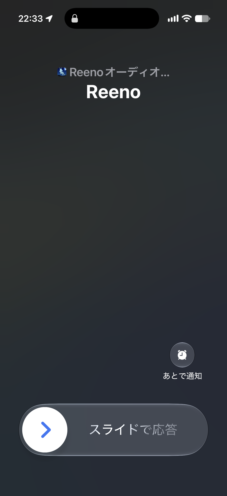
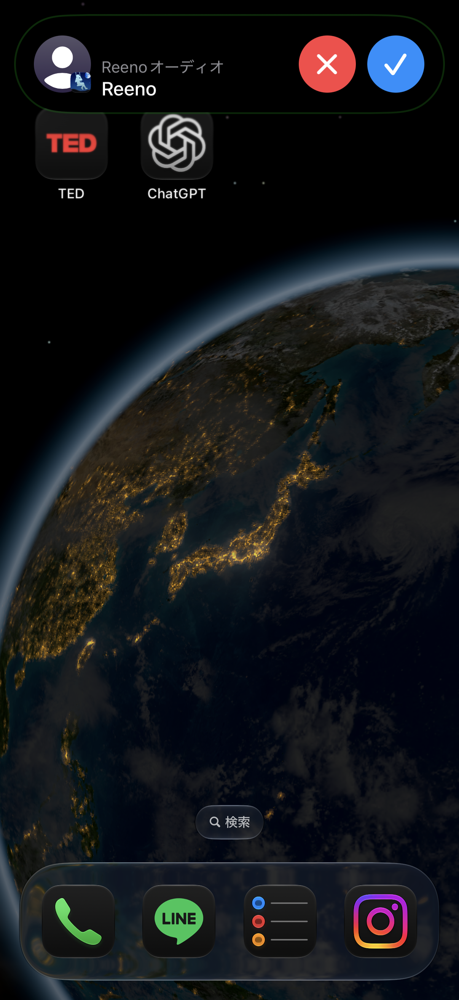
応答したら、Reenoと会話を楽しみましょう。
接続後は、設定した会話言語で今日の出来事や好きなものを話してみてください。会話を終えるときは、通話画面の赤い電話ボタンを押します。通話後はホームや履歴からふりかえれます。
着信画面の見た目はiPhoneの状態や設定によって異なります。電話に出られなかったときの表示は、次の「会話のふりかえり」で説明します。
目次へ戻る ↑会話が終わったら、ホームの「ふりかえりを見る」から履歴へ。電話に出た日も、出られなかった日も、「履歴」タブで確認できます。通話後のふりかえりでは、会話のまとめや次に使いたい言葉を読めます。
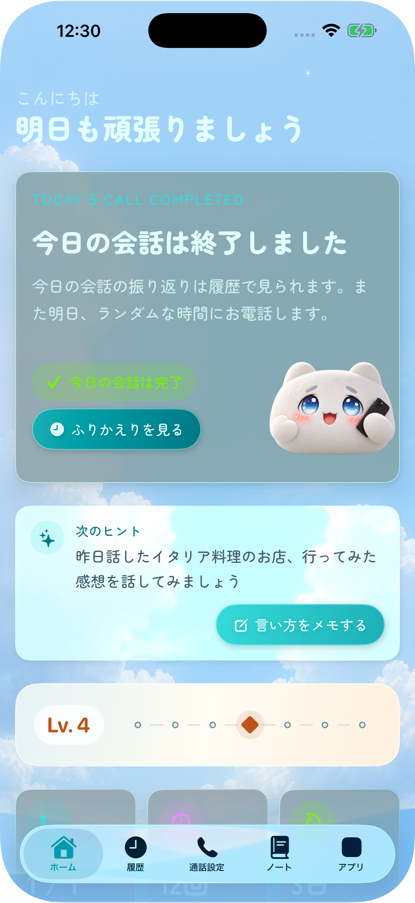
「次のヒント」は次の会話の話題づくりに。ホームの中央の案内・ボタンは、その日の状況に応じて変わります。
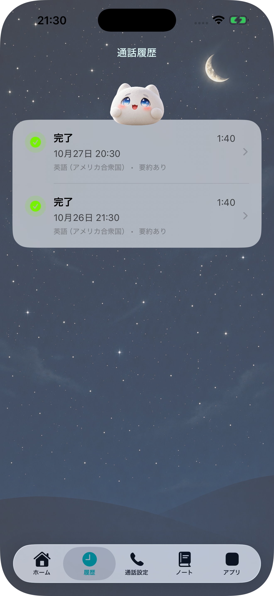
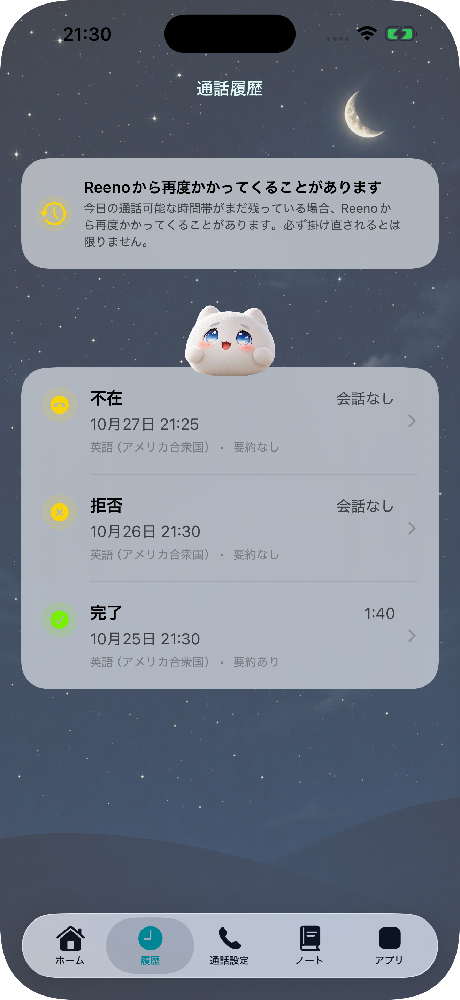
出られなかった着信は、1日の通常通話の応答回数には含まれません。今日の設定時間がまだ残っていれば、もう一度電話が来ることがあります。必ず掛け直されるわけではありません。
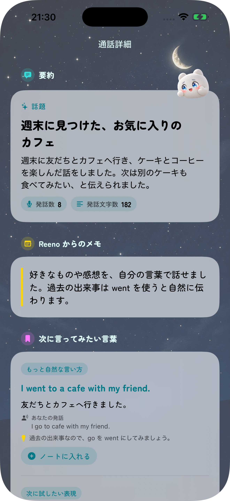
どんな話をしたか、次にどう話してみるかを見返せます。通話直後は内容を準備中の場合があります。話せなかった通話では、会話のまとめや提案が作られないこともあります。
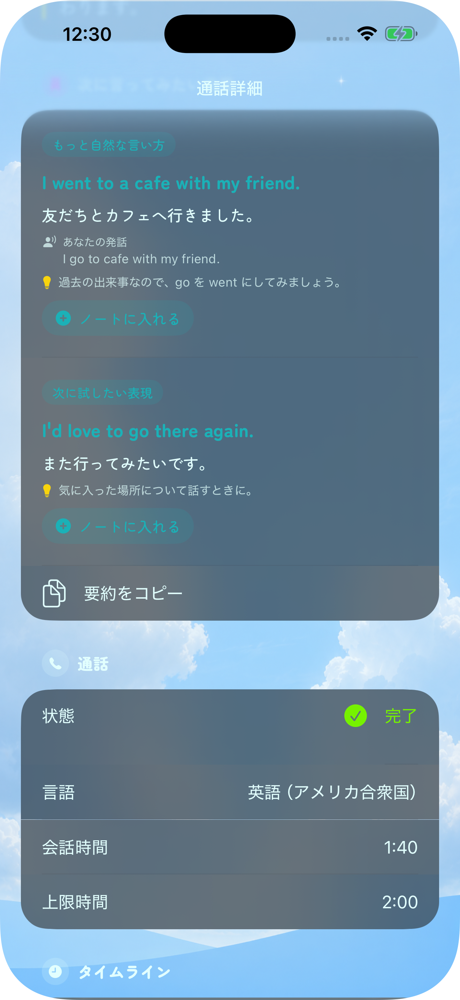
会話の言い換えや、次に試したい表現を、学習ノート（画面では「ノート」）に残せます。
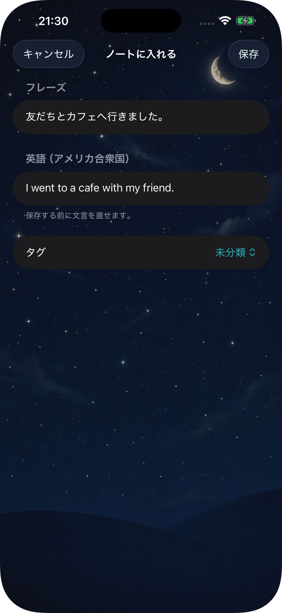
「毎日19時ちょうど」のような固定時刻ではなく、出られる時間の中からランダムに選びます。
その日まだ電話に出られていなくても、また話すチャンスがあります。
設定した時間帯とその日の回数枠が残っていれば、もう一度電話がかかってくることがあります。電話できる残り時間が1時間未満でも、次の着信を予定する対象になります。
「最後の1時間に必ず1回」という保証ではありません。予定の見直しのタイミングや、着信オフ・一時停止、通信状況などによっては届かない場合があります。
たとえば「12〜13時」と「19〜21時」なら、そのどこかに電話が来ます。必ず各時間帯に1回ずつ来る、という意味ではありません。設定した時間の長さや通話状況によっては、希望した回数どおりに着信しないこともあります。
メンターのMentaは、Reenoとの会話で感じたことや悩みを相談できる相手です。「言いたいことが出てこなかった」「旅行先でこんな話をしてみたい」など、気軽に話してみてください。
Reenoとの会話を英語などの外国語に設定していても、Mentaには日本語で相談できます。
相談画面の「話しやすい言語」で日本語を選びましょう。感想や希望を日本語で伝えながら、次の会話を楽しむ方法を一緒に考えられます。
利用できるタイミングになると、ホーム上部に入口が表示されます。
いつものReenoとの会話言語とは別に、相談に使う言語を選べます。日本語が選ばれていることを確認してください。
Mentaから電話が来たら応答し、日本語で話しかけてください。1回の相談は最大5分。通常の1日の通話回数は消費しません。
初回は、Reenoとの通常通話を1回終えたあとに利用できます。初回案内の電話とは別です。2回目は最初の相談終了から48時間後、3回目以降は前回の相談終了から7日後に利用できます。
無料体験期間中、またはサブスクリプション利用中が対象です。ほかの通話中などは利用できません。次に相談できる日時や利用状況はアプリ内の表示で確認してください。
目次へ戻る ↑
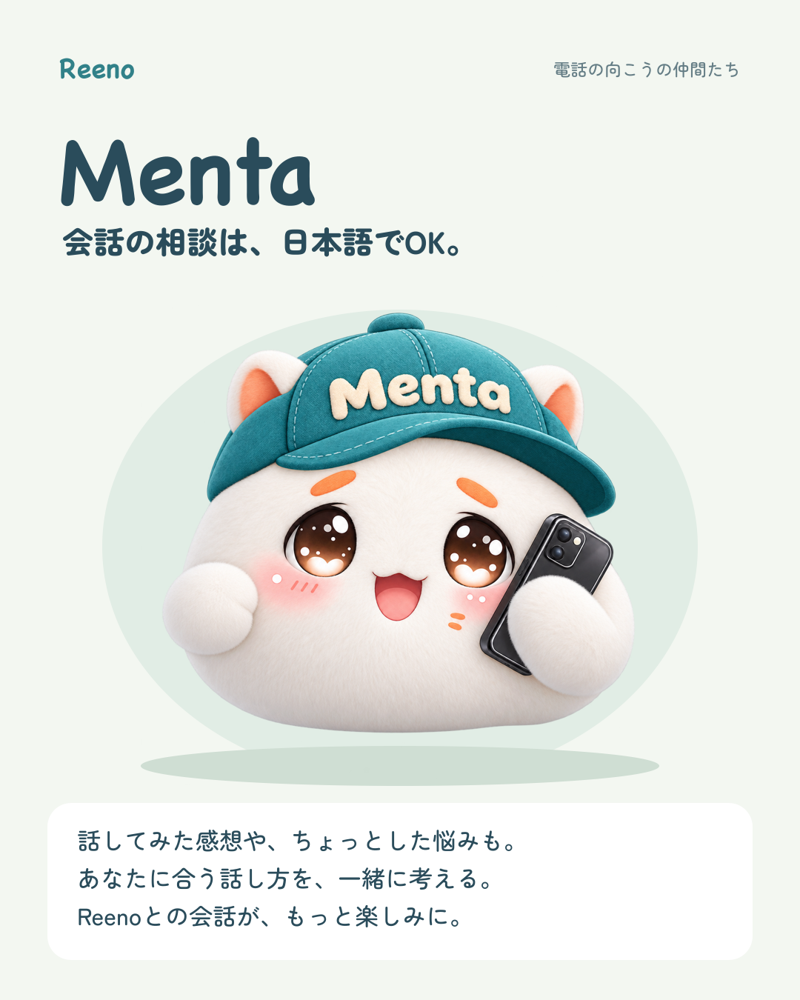